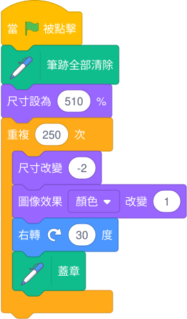
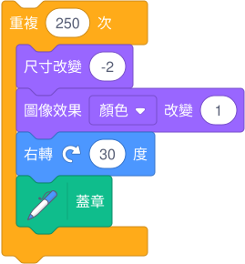

腳本 01 · 重點解說
當綠旗被點擊
完整積木圖

程式解說
- 點擊綠旗後，先清除畫筆層上的舊印記，再把 Sprite1 的尺寸設為 510%。
- 重複 250 次。每輪先縮小 2 個百分點、把顏色效果加 1、右轉 30 度，才把當下的造型蓋到畫筆層上。
- 角色留在舞台中央。每 12 次右轉回到同一朝向，較小的印記沿相同方向疊到前面的印記上。蓋章完成後，留下靜態圖案。
原作使用第 7 個造型 Broom。重按綠旗時，Scratch 會重設圖像效果，腳本會清除舊印記，角色則從當下的方向再轉。
細部積木圖 · 每一輪如何蓋出下一層

細部說明
「蓋章」記下角色當時的大小、顏色與方向，之前的印記會留在畫筆層。因為縮小發生在蓋章之前，第一枚印記的尺寸是 508%。
最後一輪碰到 Scratch 對這個造型的尺寸下限。本機實測最後一枚約為 11.42%。